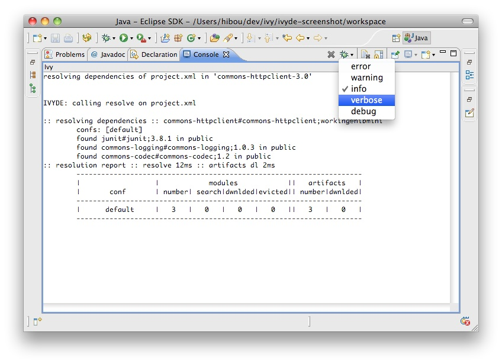

The Ivy console provides the Ivy working traces that are visible in the command console. This view can be useful for understanding what Apache Ivy and Apache IvyDE are doing under the covers.<br/> The Ivy Console can be accessed within your Eclipse Console view, by selecting the "Ivy Console" item.<br/> <br/> <center><img src="images/ivy_console.jpg"></center><br/> <br/> The colors in the console correspond to the different log levels. Here is the default mapping: <ul> <li>Debug: light blue</li> <li>Verbose: green</li> <li>Info: black</li> <li>Warn: orange</li> <li>Error: red</li> </ul> To change the level of logging in the console, use the button in the view: <br/> <center></center><br/>